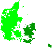
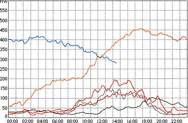

 Wind
presently covers about 10 per cent of the electricity consumption
in the Western part of Denmark.
Wind
presently covers about 10 per cent of the electricity consumption
in the Western part of Denmark.
 The ELSAM electricity supply area comprises
the Western part of Denmark with the Jutland Peninsula and the
neighbouring island of Fyn. The area has a population of 3 million.
The ELSAM electricity supply area comprises
the Western part of Denmark with the Jutland Peninsula and the
neighbouring island of Fyn. The area has a population of 3 million.
Wind
Turbines in the Electrical Grid:
Wind Energy Variations

The vast majority of the installed power of wind turbines in
the world is grid connected, i.e. the turbines feed their electricity
directly into the public electrical grid.
Wind
Energy Production During a Fine Summer Week

The graph above shows a summer week of electricity output
from the 650 MW
(megawatts) of wind turbines installed in the Western part of
Denmark. The blue curve at the top left shows the power output
on 25 June 1997, while the orange curve shows the output the
preceding day.
 Electrical power consumption was 2,700 MW
at the time this curve was printed from the power company control
centre. Wind was supplying 270 MW i.e. wind was supplying exactly
10 per cent of the electricity consumption of 3 million people
at 13:45 hours when we visited the control centre.
Electrical power consumption was 2,700 MW
at the time this curve was printed from the power company control
centre. Wind was supplying 270 MW i.e. wind was supplying exactly
10 per cent of the electricity consumption of 3 million people
at 13:45 hours when we visited the control centre.
Wind
Matches Daily Electricity Consumption Patterns
At the bottom of the graph you can see the power output of the
five preceding days. On average, the month of June has the lowest
wind power output during the year in Denmark. Some days of fresh
winds, however, began in the early morning hours of 24 June.
 The typical weather pattern is that winds
are low at night, and higher during the day, as you can see from
the five days of moderate winds.
The typical weather pattern is that winds
are low at night, and higher during the day, as you can see from
the five days of moderate winds.
 This means that wind electricity generally
fits well into the electricity consumption pattern, i.e. wind
electricity tends to be more valuable to the electrical grid
systems than if it were being produced at a random level.
This means that wind electricity generally
fits well into the electricity consumption pattern, i.e. wind
electricity tends to be more valuable to the electrical grid
systems than if it were being produced at a random level.
| Back | Home | Forward |
© Copyright 1999 Soren Krohn. All rights reserved.
Updated 6 August 2000
http://www.windpower.org/tour/grid/index.htm